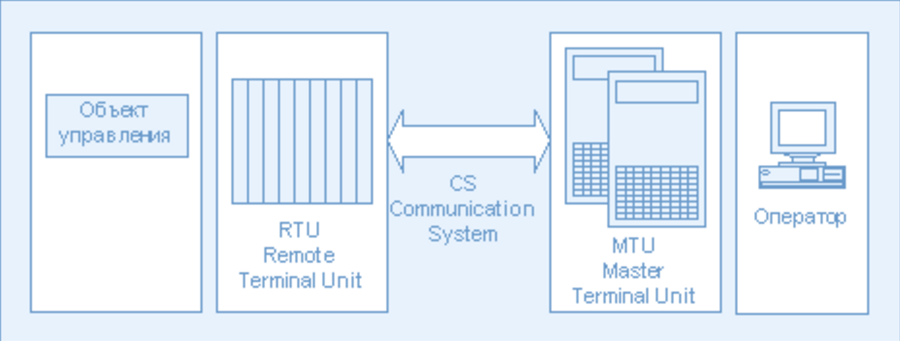
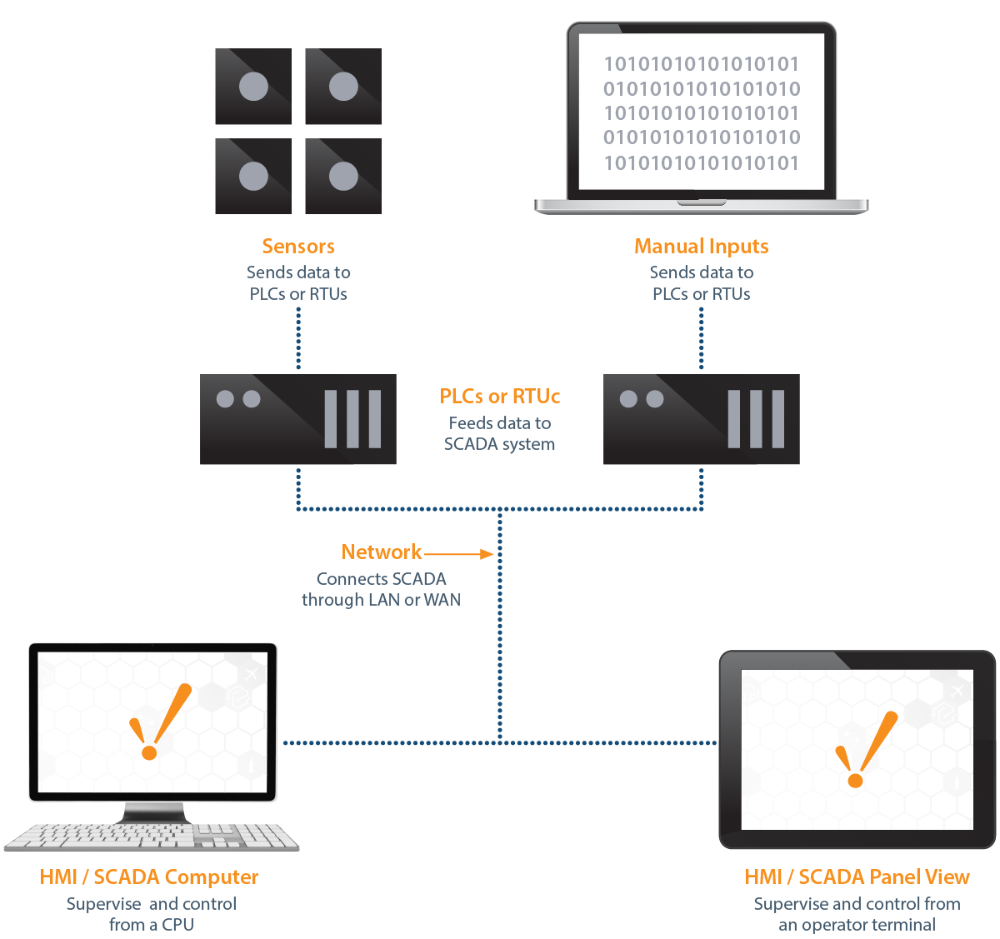

Мета
Диспетчерське управління і збір даних (SCADA - Supervisory Control And Data Acquisition) є основним і в даний час залишається найбільш перспективним методом автоматизованого управління складними динамічними системами (процесами) в життєво важливих і критичних з точки зору безпеки і надійності областях. Саме на принципах диспетчерського управління будуються великі автоматизовані системи в промисловості.
PHP середовище розробки
Apache HTTP server
Веб-сервер - сервер, що приймає HTTP-запити від клієнтів, зазвичай веб-браузерів, і видає їм HTTP-відповіді, як правило, разом з HTML-сторінкою, зображенням, файлом, медіа-потоком або іншими даними. Веб-сервером називають як програмне забезпечення, яке виконує функції веб-сервера, так і безпосередньо комп'ютер. Клієнт, яким зазвичай є веб-браузер, передає веб-серверу запити на отримання ресурсів, позначених URL-адресами. Ресурси - це HTML-сторінки, зображення, файли, медіа-потоки або інші дані, які необхідні клієнту. У відповідь веб-сервер передає клієнту запитані дані. Цей обмін відбувається по протоколу HTTP.
MySQL server
Взаємодія з базою даних відбувається за допомогою Системи Управління Базою Даних (СУБД), яка розшифровує запити і здійснює операції з інформацією в базі даних. MySQL - це одна з найпопулярніших і найпоширеніших СУБД
Механізм PHP
PHP - скриптова мова загального призначення, інтенсивно застосовується для розробки веб-додатків.
SCADA
Всі сучасні SCADA-системи включають три основних структурних компонента (див.Рис. ):
Remote Terminal Unit (RTU) віддалений термінал, який здійснює обробку завдання (управління) в режимі реального часу. Спектр його втілень широкий від примітивних датчиків, які здійснюють знімання інформації з об'єкта, до спеціалізованих багатопроцесорних відмовостійких обчислювальних комплексів, які здійснюють обробку інформації і управління в режимі жорсткого реального часу. Конкретна його реалізація визначається конкретним застосуванням. Використання пристроїв низкоуровневой обробки інформації дозволяє знизити вимоги до пропускної здатності каналів зв'язку з центральним диспетчерським пунктом.
Master Terminal Unit (MTU), Master Station (MS) диспетчерський пункт управління (головний термінал); здійснює обробку даних і управління високого рівня, як правило, в режимі м'якого (квазі-) реального часу; одна з основних функцій забезпечення інтерфейсу між людиною-оператором і системою (HMI, MMI). Залежно від конкретної системи MTU може бути реалізований в самому різноманітне вигляді від одиночного комп'ютера з додатковими пристроями підключення до каналів зв'язку до великих обчислювальних систем (мейнфреймів) і / або об'єднаних в локальну мережу робочих станцій і серверів. Як правило, і при побудові MTU використовуються різні методи підвищення надійності та безпеки роботи системи.
Communication System (CS) комунікаційна система (канали зв'язку), необхідна для передачі даних з віддалених точок (об'єктів, терміналів) на центральний інтерфейс оператора-диспетчера і передачі сигналів управління на RTU (або віддалений об'єкт в залежності від конкретного виконання системи).
How Do SCADA Systems Work?
SCADA systems deploy multiple software and hardware elements that allow industrial organizations to:
- Monitor, gather, and process data
- Interact with and control machines and devices such as valves, pumps, motors, and more, which are connected through HMI (human-machine interface) software
- Record events into a log file
In basic SCADA architectures, information from sensors or manual inputs are sent to PLCs (programmable logic controllers) or RTUs (remote terminal units), which then send that information to computers with SCADA software. SCADA software analyzes and displays the data in order to help operators and other workers to reduce waste and improve efficiency in the manufacturing process.
